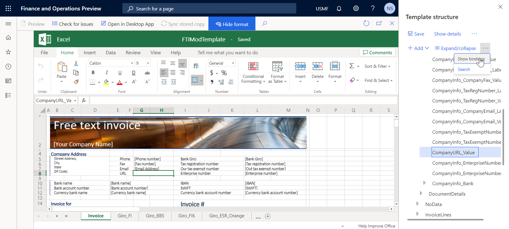
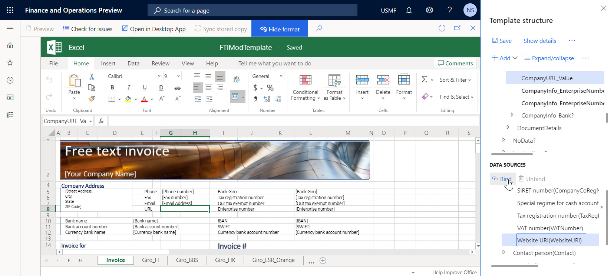
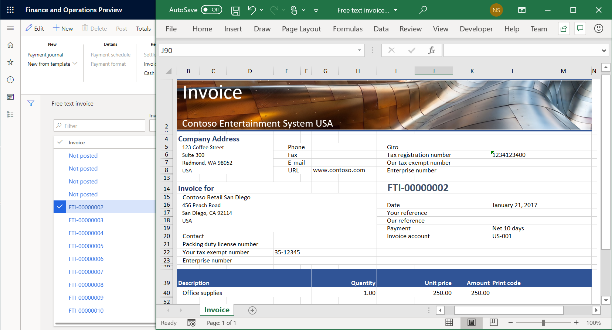

Add new fields to a business document template in Microsoft Excel
You can add new fields to a template that is used to generate business documents in Microsoft Excel format. These fields can be added as placeholders that are used to fill generated documents with required information from the application. For every field that you add, you can also specify a binding to the data sources, to specify what application data will be entered in the field when the template is used to generate business documents.
To learn more about this feature, complete the example in this topic. This example shows how to update a template to fill in the fields in free text invoice forms that are generated.
Configure Business document management to edit templates
Because Business document management (BDM) is built on top of the Electronic reporting (ER) overview framework, you must configure the required ER and BDM parameters before you can start to work with BDM.
Sign in to the instance of Microsoft Dynamics 365 Finance as the system administrator.
Complete the following steps of the example in the Business document management overview topic:
- Configure ER parameters.
- Turn on BDM.
You can now start to use BDM to edit business document templates.
Import ER solutions that contain a template
The example in this procedure uses the officially published ER solution. You must import the ER configurations of this solution into your current instance of Finance.
The Free text invoice (Excel) ER format configuration of this solution contains the business document template in Excel format that can be edited by using BDM. Import the latest version of this ER format configuration from Microsoft Dynamics Lifecycle Service (LCS). The corresponding ER data model and ER model mapping configurations will be imported automatically.
For more information about how to import ER configurations, see Manage the ER configuration lifecycle.
Edit the ER solution template
Sign in as a user who has access to the Business document management workspace.
Open the Business document management workspace.

In the grid, select the Free text invoice (Excel) template.
In the right pane, select New template to create a new template that is based on the selected template.
In the Title field, enter Free text invoice (Excel) Contoso as the title of the new template.
Select OK to confirm the start of the editing process.
The BDM template editor page appears. You can use Microsoft 365 to edit the selected template online in the embedded control.

Add the label for a new field to the template
On the BDM template editor page, on the Excel ribbon, on the View tab, select the Headings and Gridlines check boxes for the editable Excel template.

Select cells E8:F8.
On the Excel ribbon, on the Home tab, select Merge & Center to merge the selected cells into a new merged E8:F8 cell.
In the merged cell E8:F8, enter URL.
Select merged cell E7:F7, select Format painter, and then select merged cell E8:F8 to format it in the same way as merged cell E7:F7.
Format the template to reserve space for a new field
On the BDM template editor page, select merged cell G8:H8.
On the Excel ribbon, on the Home tab, select Merge & Center to merge the selected cells into a new merged G8:H8 cell.
Select merged cell G7:H7, select Format painter, and then select merged cell G8:H8 to format it in the same way as merged cell G7:H7.
In the Name box field, select CompanyInfo.
The CompanyInfo range of the current Excel template holds all the fields that are used to fill the header of a generated report with the details of the current company as a seller party.

Add a new field to the template
On the BDM template editor page, on the Action Pane, select Show format.
In the Template structure pane, select Add.
Note
You must adjust the section of the template that you want to use as a new field. You already made this adjustment by formatting merged cell G8:H8.
Select Excel\Cell to add a new field as a cell in the template.
You can select Excel\Range if you want to add a new range to the template. The range that is entered can contain multiple cells. You can add these cells later.
Notice that the CompanyInfo template component, is automatically selected in the Template structure pane, because it's the most suitable parent component in the current template structure for the field that you're adding.
In the Excel range field, enter CompanyURL_Value.
Select OK.
In the Template structure pane, select the ellipsis button (...), and then select Show bindings.

The Template structure pane now shows the data sources that are available in the underlying ER format.
Select CompanyInfo_Value as the field that you plan to bind to a data source of the underlying ER format.
In the Data sources section of the Template structure pane, expand Model > InvoiceBase > CompanyInfo.
Under CompanyInfo, select the WebsiteURI item.

Select Bind.
In the Template structure pane, select Save, and then close the BDM template editor page.
In the Business document management workspace, the Template tab in the right pane shows the updated template. In the grid, notice that the Status field for the edited template has been changed to Draft, and the Revision field is no longer blank. These changes indicate that the process of editing this template has been started.

Review company settings
- Go to Organization administration > Organizations > Legal entities.
- On the Contact information FastTab, verify that the company URL is entered.

Generate business documents to test the updated template
In the application, change the company to USMF, and go to Accounts receivable > Invoices > All free text invoices.
Select invoice FTI-00000002, and then select Print management.
In the left pane, expand Module - accounts receivable > Documents > Free text invoice.
Under Free text invoice, select the Original document level to specify the scope of invoices for processing.
In the right pane, in the Report format field, select the Free text invoice (Excel) Contoso template for the specified document level.

Press Esc to close the current page.
Select Print > Selected.
Download the generated document, and open it in Excel.

The modified template is used to generate the free text invoice report for the selected item. To analyze how this report is affected by changes that you make to the template, run the report in one application session immediately after you change the template in another application session.
Related links
Electronic reporting (ER) overview
Business document management overview
Design a configuration for generating reports in OPENXML format